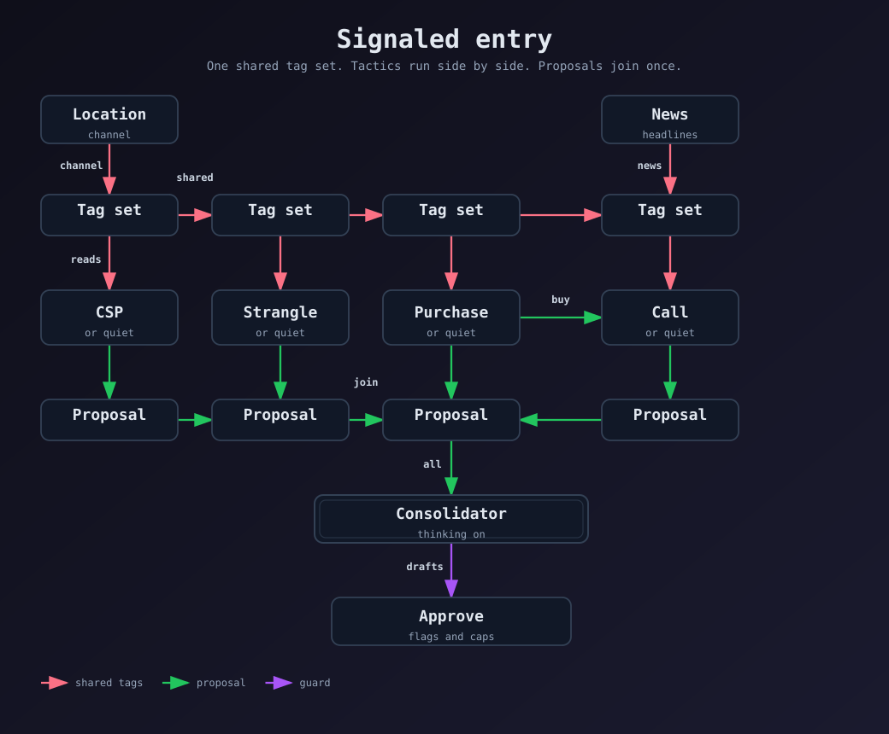

How a cycle runs

NVDA sample fixture, not a live read
Last 182.40 is on the lower rail of a rising 63-session channel (180 to 230) and above the 52-week low of 140. On Universe this symbol is Accumulate and Long. No shares are held.
| Agent | Proposal |
|---|---|
| CSP | Cash-secured put, 175 strike, limit 2.40 |
| Call | Quiet until the share purchase fills. Then a covered call at the upper rail. |
| Purchase | Buy shares at 182.50 |
| Strangle | Quiet. News wash is unconfirmed. |
| Consolidator | draft_a1 share purchase first. draft_b2 cash-secured put beside it. Both inside the risk cap. |
An off CSP, CC, Strangle, or Long switch on Universe drops that agent's draft. Nothing is sent until Approve.